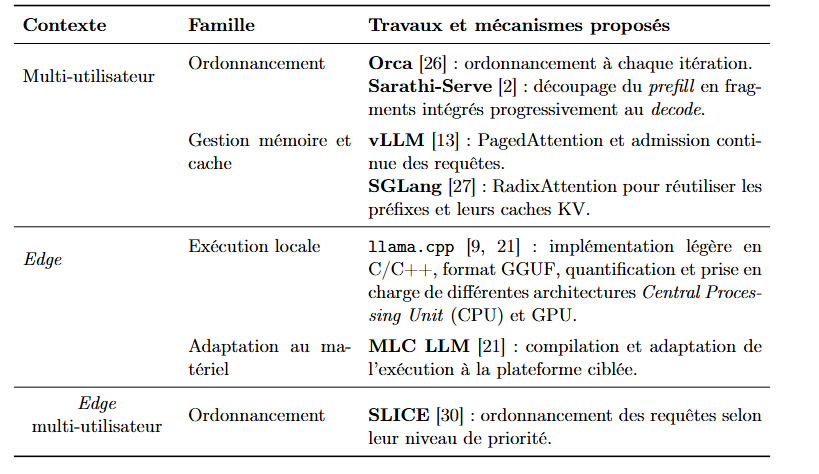
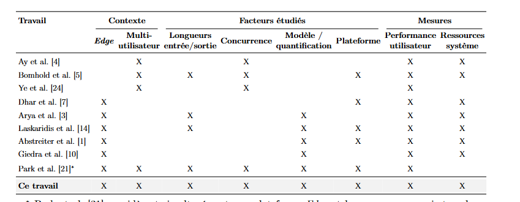

LLM Edge Inference Memory-management Scheduling Lina 2025 ==🟢LLM’s on the edge:
Pros: Better latency privacy and dependant from cloud
Cons: limited computing and memory resources.
LLM inference has been studied more on server rather than edge.
Edge research concentrates on 🟢model quantization,load or platform (Adaptation to the Edge.
The researcher uses NVIDIA Jetson(AGX Orin and Orin Nano) and two inference engines llama.cpp and vLLM
Results show that vLLM provides 🟢better performance in most configurations ( as load and concurrency increases) but ==🟢uses more CPU and Memory.
Llama.cpp is==🟢 lighter and has better sharing properties.
Result can be similarly observed on both archetichtures
Therefore there is a tradeoff between performance and resource usage when choosing an inference environment.
In a multi-user Edge context, how do different inference engines perform in terms of user-perceived performance and resource utilization under different workload types?
LLM’s currently are based on Transformers architecture Vaswani et al 2017 .
🟢The models in this paper uses Decoders only
-
Chapter 1 : LLM + inferences on edge This chapter presented the main elements necessary to understand Process of the inference in a multi-user Edge context(Multi-user inference). The operation of the Prefill Phase and Decode Phase as well as the use of the KV Cache make it possible to understand the constraints that appear when several requests are processed simultaneously, particularly in terms of Scheduling Policy and Memory Management. On Edge, these constraints are reinforced by more limited computing and memory resources, which also leads to adapting models in order to reduce their execution cost. These elements make it possible to address the solutions proposed to improve Multi-user inference and its execution on Edge.
-
Chapter2:
Different solutions have been proposed to improve the ==execution of LLMs in a Multi-user inference context and on Edge platforms== Zheng et al. (2025). In parallel, characterization work has studied the influence of the workload, the engine or the platform on performance and resource utilization .
Systems and optimizations for LLM inference
-
Edge platforms: the more limited hardware capacities lead to favoring solutions adapted to these constraints Some solutions favor a lightweight and portable implementation, while others adapt the execution to the targeted platform.
-
==In a multi-user environment(Multi-user inference):== efficiently organize the execution of several queries(Scheduling Policy , Batching) and their sharing of resources
-
In a multi-user context. It introduces iteration-level scheduling to allow the ==composition of the batch(Batching) to evolve during generation== rather than remaining fixed until all requests are completed.
-
This granularity of scheduling(Scheduling Policy) makes it possible to better process requests whose lengths differ and constitutes one of the principles adopted by systems using continuous batching today.
-
This evolution of the scheduling does not eliminate the interactions between the prefill and decode phases when several requests progress simultaneously. so Sarathi-Serve solved this issue to. This organization makes it possible to limit decode interruptions while retaining enough parallel work to maintain high throughput, so as to improve the compromise between throughput and latency under concurrent load.
-
The increase in the number of active requests also increases memory requirements, particularly due to the accumulation of their KV Cache.
-
vLLM addresses this problem through Paged Attention, which directs it towards loads comprising a large number of concurrent requests. This work thus shows that the processing of concurrent requests can be improved at several complementary levels: Orca and Sarathi-Serve mainly act on the Scheduling Policy, while vLLMand SGLang also seek to better exploit the Memory Management and the information already calculated. Not well researched on edge

-
==Server Tests on Multi-Tenant Environments:==
- Ay et Demirdağ (2026) compare ollama and vLLM on an NVIDIA H100 GPU by gradually increasing the number of concurrent requests. Depending on the scenarios considered, vLLM achieves a throughput of 20 to 29 times higher and a P95 latency of 8 to 19 times lower than that of Ollama under strong competition. The authors also observe that vLLM remains stable up to 100 concurrent users in their campaign, while Ollama encounters an initial bottleneck around ten users.
- Bomhold et al. (2026) also characterize vLLM under concurrency on multiple GPUs available in the cloud. On an NVIDIA L40S, their load comprising 50 concurrent requests reaches around 2687 tokens/s, compared to 104 tokens/s in sequential execution. Their study also shows that the characteristics of the requests remain determining:increasing the output length mainly acts on latency, while lengthening the prompt more affects the time until the first token (Time To First Token, TTFT) .
- Ye et al. (2025) finally show that, under competition, performance depends jointly on batching, query characteristics and the use of the KV cache on server GPUs or in cloud environments.
Edge Tests:
- Dhar et al. (2024) highlight the hardware dependence by running an INT4-quantized LLaMA-2 7B model with llama.cpp on multiple devices The throughput goes from 0.11 token/s on a Raspberry Pi 4 with 8 GB of memory to 4.49 tokens/s on an NVIDIA Jetson AGX Orin .Their analysis also shows that the limiting resource can change depending on the platform, particularly when the memory capacity becomes insufficient.
- Arya et al study the effect of several parameters on NVIDIA Jetson AGX Orin, including sequence length, batch size and quantification Adaptation to the Edge. They observe that lengthening sequences reduces throughput and that a reduction in precision does not systematically lead to an acceleration, some of the smallest models studied can on the contrary be slowed down.
- Laskaridis et al. [14] and Abstreiter et al. [1] also study the trade-offs between performance, memory and energy during local inference on different hardware and models.
- Giedra et al. [10] evaluate twelve models ranging from less than one billion to around eight billion parameters on an NVIDIA Jetson Orin Nano Super. In particular, they obtain a median throughput of 18.13 tokens/s with GPU acceleration compared to 7.12 tokens/s in CPU execution alone. This work confirms that the model, execution mode and platform capabilities directly influence the performance obtained on Edge.
- Park et al. 2026 come closer to a context combining Edge and competition. The authors evaluate 21 engines on multiple platforms, ranging from server infrastructures to an NVIDIA Jetson AGX Orin, while varying input and output lengths as well as the level of concurrency. Their campaign shows that the relative performance of motors depends on the load and the platform considered. However, it also highlights a difficulty in this comparison: not all of the engines studied can be deployed on all equipment. In particular, the authors are unable to run vLLM on the Jetson AGX Orin of their campaign, so that the comparison carried out on Edge does not cover the same engines as that carried out on server infrastructures.

Results: Lina 2025
-
Q1: Workload Influence: How do input and output lengths influence the performance, resource usage, and power consumption of llama.cpp and vLLM?
- Concurrency is set to 1 to avoid disturbance and The effect of the ==input length is thus studied by maintaining O = 128 and varying P, while the effect of the output length is studied inversely by maintaining P = 128 and varying O==.
- TTFT is better in vLLM rather than llama.cpp but is close when the Prefill Phase is small. As prefill increases vLLM performance begin to show since at low prefill, due to the multiple process required to run vLLM, performance gain are not evident and are skewed.
- Increase output does not have a direct relationship with performance gain /loss.
- Concurrency is set to 1 to avoid disturbance and The effect of the ==input length is thus studied by maintaining O = 128 and varying P, while the effect of the output length is studied inversely by maintaining P = 128 and varying O==.
-
Q2:Influence of concurrency: How does the behavior of the two engines change when the number of competing requests increases?
-
Q3: Resource sharing: How does sharing platform resources with another application change the behavior of both engines?
-
Q4 – Generalization to other models and quantifications: Do the ==observed trends persist when the architecture, size or quantificationAdaptation to the Edge of the model changes==?
-
Q5 – Generalization to another Edge platform: Are the trends obtained on the main platform maintained on an Edge platform with more limited resources?